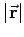

Inhalt Index DeskTop Bronstein

 Vektoranalysis und Feldtheorie Grundbegriffe der Feldtheorie Skalarfelder
Vektoranalysis und Feldtheorie Grundbegriffe der Feldtheorie Skalarfelder


| (13.7a) |
| Beispiel | ||
|
Das Feld der Intensität einer punktförmigen Strahlungsquelle, z.B. das Feld der Lichtstärke, wird mit  als Abstand von der Strahlungsquelle beschrieben durch
|